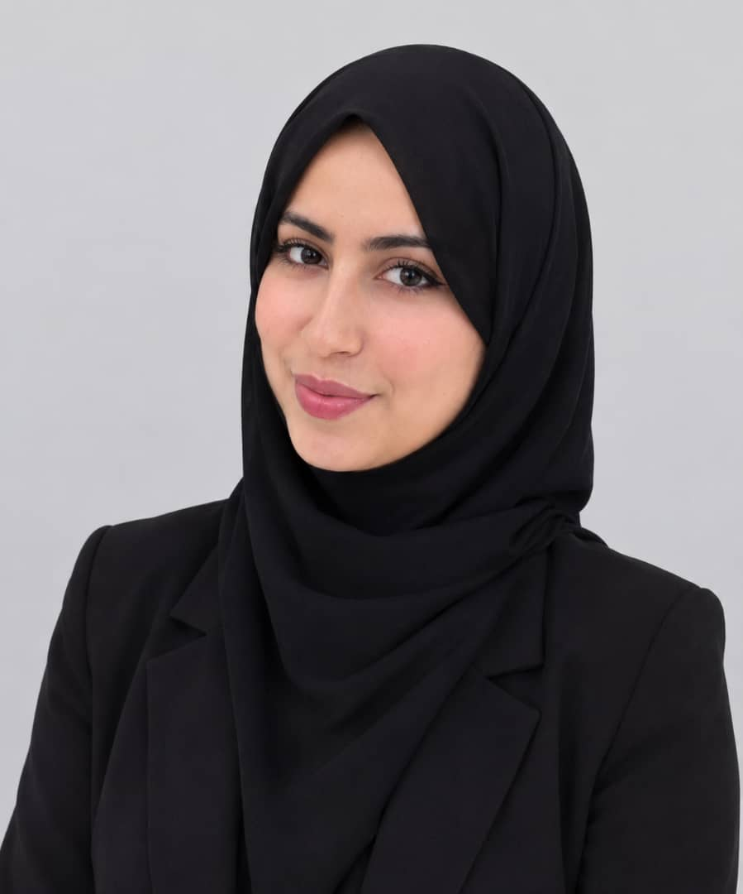

Doctor of Veterinary Medicine
Diploma in Veterinary Medicine and an Academic Master's degree, majoring in Pathology in Veterinary Sciences at the Institute of Veterinary Sciences, Saad Dahlab University, Blida 1.
Academic portfolio · Algeria
The digital universe of Ibtessam
Computer Science student · Doctor of Veterinary Medicine · Cybersecurity enthusiast
Ambitious and action-driven, I bring scientific rigor and curiosity to every new challenge.
Explore my universe Contact me
Welcome to my digital universe
Three perspectives on my academic and professional interests.
At a glance
Part 1 · About me
My academic journey connects veterinary medicine, computer science and cybersecurity.
My name is Khobizi Ibtessam. I am a third-year Computer Science student, passionate about programming and every technological discipline. A strong command of mathematics fuels my logic and rigor every day. Ambitious and action-driven, I love designing innovative projects and taking on complex technical challenges.
Diploma in Veterinary Medicine and an Academic Master's degree, majoring in Pathology in Veterinary Sciences at the Institute of Veterinary Sciences, Saad Dahlab University, Blida 1.
Third year of the Bachelor's program at Akli Mohand Oulhadj University, Bouira, Faculty of Exact Sciences, Department of Computer Science. Studies completed in French and English.
Education & credentials
Akli Mohand Oulhadj University of Bouira · Faculty of Exact Sciences · Department of Computer Science
Veterinary Sciences · Pathology (dominant) in Veterinary Medicine · Saad Dahlab University, Blida 1
Institute of Veterinary Sciences (ISV) · Saad Dahlab University, Blida 1
The 2024 baccalaureate was in Experimental Sciences.
Akli Mohand Oulhadj University of Bouira · Faculty of Natural and Life Sciences
My universities
Bouira · Algeria
I pursue my studies at Akli Mohand Oulhadj University of Bouira, an institution of excellence at the forefront of scientific research in Algeria. Recognized for the rigor and quality of its teaching, the university maintains a particularly high academic standard, where good grades reflect real merit and hard work. This culture of excellence is carried by an elite faculty of internationally recognized researchers and professors who built their expertise abroad.
Blida · Algeria
Saad Dahlab University – Blida 1 is a public Algerian university located in Blida, created by decree on 1 August 1980. It is organized into faculties and institutes, including the Faculty of Sciences, the Faculty of Natural and Life Sciences, the Institute of Aeronautics and Space Studies, the Institute of Applied Sciences and Techniques, and the Institute of Veterinary Sciences. Its programs cover seven fields of study, including architecture, medical sciences and veterinary sciences.
The ISV is one of the university's historic institutions: it trains veterinary doctors and contributes to animal health, public health and food safety.
Skills & values
Part 2 · Experience, training & internship
Explore the training, coursework and experiences that continue to shape my skills.
Continual qualifying training · Technoformat school · Bouira
Field: Computer Science · Option: Cybersecurity · 14 July – 2 September 2026
Successfully passed the end-of-training exam.
Core concepts: CIA triad, threats, vulnerabilities and risks; overview of cyberattacks.
TCP/IP, VLANs, firewalls, VPNs, IDS/IPS and network segmentation.
Symmetric and asymmetric encryption, hashing, digital signatures, certificates and PKI.
Reconnaissance, network scanning with Nmap and enumeration.
Exploitation with Metasploit, privilege escalation and pentest reporting.
OWASP Top 10, SQL injection, XSS, CSRF and Burp Suite.
Access management, encryption, auditing and secure backups.
Malware analysis and reverse engineering with Ghidra.
Digital investigation, evidence collection and chain of custody.
Indicators of compromise (IOCs), MITRE ATT&CK and SIEM.
AWS, Azure, Google Cloud and identity and access management (IAM).
ISO 27001, NIST, GDPR and risk analysis.
Zero Trust, AI and cybersecurity, ransomware and IoT security.
Full audit, professional report and presentation of results.
SoloLearn · Online course
Coursework spanning classes, object-oriented design, exceptions, collections, concurrency and files.
OOP; creating classes and objects; class attributes; access modifiers; getters and setters; constructors; value vs. reference types; Math class; static and final; packages.
Encapsulation, inheritance, polymorphism, overloading and overriding, abstract classes, interfaces, casting and downcasting, anonymous classes, inner classes, equals(), enums and using the Java API.
Exception handling (multiple, runtime vs. checked), threads, ArrayList, LinkedList, HashMap, sets, sorting lists, iterators, and reading, creating and writing files.
SoloLearn · Online course
Coursework in collection types, error handling, functional programming and OOP.
Tuples, lists and arrays, sets, dictionaries, list comprehensions. Practice: filtering long words.
Exceptions and exception handling. Practice: vending-machine selection.
Lambda expressions, map and filter, args and kwargs, decorators. Practice: survey data.
Inheritance. Practice: Library Management System. Data hiding, class and static methods.
April – August 2026 · End-of-study placement
Computer Science internship in a professional banking environment.
Creative & soft skills
I combine imagination, aesthetic sense and reflection to create original visual work. I value communicating and sharing knowledge, taking an active part in collective activities, and staying open to learning new techniques.
Part 3 · Projects
Projects and challenges give me a place to explore ideas and apply what I am learning.
Final training project · TryHackMe
A four-step challenge in a controlled training environment.
Launch the target machine on TryHackMe and connect the attacking environment through AttackBox or VPN.
Scan with Nmap to identify open ports such as HTTP and SMB.
Identify the vulnerable web application and exploit the flaw to obtain an initial shell.
Analyze the compromised Windows system, look for credentials or hashes, and escalate to Administrator level.
Completed as a learning challenge in a controlled environment.
Project 3 · Continuous practice
Hands-on practice through cybersecurity and creative learning platforms.
Certificates & credentials
Technoformat · 2026
French & English
2024
April–August 2026
2022
Veterinary Sciences · 2022
Original documents available on request.
Start a conversation
For university admissions, graduate programs and academic opportunities, I would be glad to hear from you.
khobiziibtessam@gmail.com